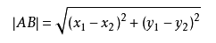
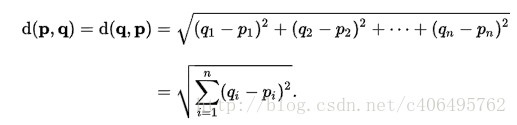
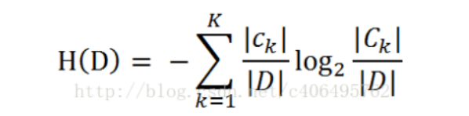
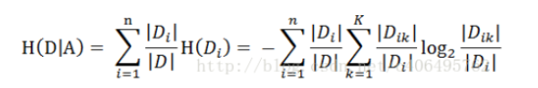
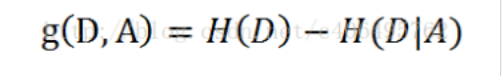
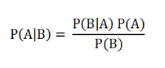
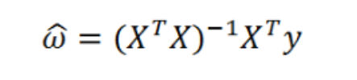
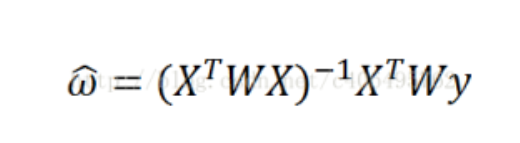
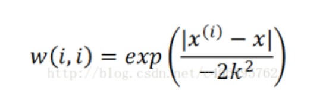

1. 一. Anaconda
windows环境变量
C:\ProgramData\Anaconda3
C:\ProgramData\Anaconda3\Library\mingw-w64\bin
C:\ProgramData\Anaconda3\Library\bin
C:\ProgramData\Anaconda3\Scripts
启动jupyter notebookjupyter notebook
要新建⼀个notebook，点击按钮New，选择“Python3”或“conda[默认项]”。如果是第⼀次，点击空格，输⼊⼀⾏Python代码。然后按Shift-Enter执⾏。
当保存notebook时（File⽬录下的Save and Checkpoint），会创建⼀个后缀名为.ipynb的⽂件。
要加载存在的notebook，把它放到启动notebook进程的相同⽬录内。
在变量前后使⽤问号？，可以显示对象的信息
键盘快捷键
| 快捷键 | 说明 |
|---|---|
| Ctrl-P或↑箭头 | 用当前输入的文本搜索之前的命令 |
| Ctrl-N或↓箭头 | 用当前输入的文本搜索之后的命令 |
| Ctrl-R | Readline方式翻转历史搜索（部分匹配） |
| Ctrl-Shift-V | 从剪贴板粘贴文本 |
| Ctrl-C | 中断运行的代码 |
| Ctrl-A | 将光标移动到一行的开头 |
| Ctrl-E | 将光标移动到一行的末尾 |
| Ctrl-K | 删除光标到行尾的文本 |
| Ctrl-U | 删除当前行所有的文本 |
| Ctrl-F | 光标向后移动一个字符 |
| Ctrl-B | 光标向前移动一个字符 |
| Ctrl-L | 清空屏幕 |
魔术命令
| 命令 | 说明 |
|---|---|
| 命令? | 在变量前后使⽤问号？，可以显示对象的信息 |
| %timeit | 测量python语句的运行时间 |
| %quickref | 显示IPython的快速参考 |
| %magic | 显示所有魔术命令的详细文档 |
| %debug | 在出现异常的语句进入调试模式 |
| %hist | 打印命令的输入（可以选择输出）历史 |
| %pdb | 出现异常时自动进入调试 |
| %paste | 执行剪贴板中的代码 |
| %capaste | 开启特别提示，手动粘贴待执行代码 |
| %reset | 删除所有命名控件中的变量和名字 |
| %page OBJECT | 美化打印对象，分页显示 |
| %run scrpy.py | 运行代码 |
| %prun statement | 用CProfile运行代码，并报告分析器输出 |
| %time statement | 报告单条语句的执行时间 |
| %timeit statement | 多次运行一条语句，计算平均执行时间，适合执行时间短的代码 |
| %who,%who_Is, %whos | 显示命名控件中的变量，三者显示的信息级别不同 |
| %xdel variable | 删除一个变量，并清空任何对它的引用 |
| %load | 将脚本导⼊到⼀个代码格中 |
2. 二. Matplotlib
import matplotlib.pyplot as plt
# 画曲线图，k--表示画虚线
plt.plot([3,1,5,4,7,3,3,1,1], 'k--')
# 画散点图
plt.scatter(x=[1,3,5,7,9], y=[2,4, 6,8,10])
# 创建画布
fig = plt.figure()
# 向指定画布中添加画图对象
ax1 = fig.add_subplot(2, 2, 1)
# 创建一个指定画布布局的画图区域
fig, axes = plt.subplots(2, 3)
# 直⽅方图
plt.hist(np.random.randn(100), bins=20, color='k', alpha=0.3)
# 设置x轴下标的区域
plt.xticks([0, 250, 500, 750, 1000], ['one', 'two', 'three', 'four', 'five'], rotation=30, fontsize='small')
# 设置标题
plt.title('My first matplotlib plot')
# 设置x轴标题
plt.xlabel('Stages')
# 图表保存为本地图片
plt.savefig('figpath.png', dpi=400, bbox_inches='tight')
2.1. pandas绘图
DataFrame的plot方法会在一个subplot中为各列绘制一条线，并自动创建图例
plot.bar()和plot.barh()分别绘制水平和垂直的柱状图。这时，Series和DataFrame的索引将会被⽤用作X（bar）或Y（barh）刻度
设置stacked=True即可为DataFrame⽣生成堆积柱状图
# 绘制直方图
tips['tip_pct'].plot.hist(bins=50)
# 绘制密度图，通过计算“可能会产生观测数据的连续概率分布的估计”而产⽣
tips['tip_pct'].plot.density()
2.2. seaborn绘图
import seaborn as sns
# 绘制水平柱状图，绘制在柱状图上的黑线代表95%置信区间
sns.barplot(x='tip_pct', y='day', data=tips, orient='h')
# 绘制密度图，通过计算“可能会产生观测数据的连续概率分布的估计”而产⽣
sns.distplot(values, bins=100, color='k')
#做一个散布图，并加上一条线性回归的线
sns.regplot('m1', 'unemp', data=trans_data)
# 制作网格分面图
sns.factorplot(x='day', y='tip_pct', hue='time', col='smoker', kind='bar', data=tips[tips.tip_pct < 1])
# 绘制盒图，(可以显示中位数，四分位数，和异常值)
sns.factorplot(x='tip_pct', y='day', kind='box', data=tips[tips.tip_pct < 0.5])
sns.boxplot(data=[hour_df['temp'], hour_df['windspeed']], ax=ax)
matplotlib.pyplot.figure()
3. 三. Numpy
说明：
- ndarray中数据类型必须一致
- 大小相同的数组比较会生成布尔值数组
3.1. ndarray属性
ndarray.ndim- 数组的轴（维度）的个数ndarray.shape- 数组的维度。这是一个整数的元组，表示每个维度中数组的大小ndarray.size- 数组元素的总数。这等于shape的元素的乘积ndarray.dtype- 一个描述数组中元素类型的对象ndarray.astype()- 传入一个类型，返回一个新数据类型的ndarrayndarray.itemsize- 数组中每个元素的字节大小ndarray.data- 该缓冲区包含数组的实际元素。通常，我们不需要使用此属性，因为我们将使用索引访问数组中的元素
>>> import numpy as np
>>> a = np.arange(15).reshape(3, 5)
>>> a
array([[ 0, 1, 2, 3, 4],
[ 5, 6, 7, 8, 9],
[10, 11, 12, 13, 14]])
>>> a.shape
(3, 5)
>>> a.ndim
2
>>> a.dtype.name
'int64'
>>> a.itemsize
8
>>> a.size
15
>>> type(a)
<type 'numpy.ndarray'>
>>> b = np.array([6, 7, 8])
>>> b
array([6, 7, 8])
>>> type(b)
<type 'numpy.ndarray'>
3.2. 数组创建
numpy.array() - 传入一个python容器，将输入的数据转换为ndarray，自动推断出dtype或者自定义
numpy.range() - 传递一个python数据容器转换为数组，容器中嵌套容器则会创建多维数组，dtype=int64指定数据类型
numpy.zeros() - 传递一个数或者一个元组指定数组的维度，数组值以零填充，dtype=int64指定数据类型
numpy.ones() - 传递一个数或者一个元组指定数组的维度，数组值以一填充，dtype=int64指定数据类型
numpy.emptys() - 传递一个数或者一个元组指定数组的维度，数组值随机填充，dtype=int64指定数据类型，默认为float64
numpy.full() - 根据指定的值填充传入的数组numpy.arange() - 类似于python中的array，传入起始值，结束值(不包含)，步长。返回一个一维数组numpy.linspace() - 传入起始值，结束值(不包含)，返回数据个数。返回一个一维数组numpy.zeros_like()，numpy.ones_like()，numpy.emptys_like() - 传入一个数组，返回一个和传入数组相同维度的数组，数组元素按照各自方法填充numpy.random.rand() - 传入多个值，用传入值表示维度，返回一个元素值在(0, 1)之间随机的数组numpy.random.randn() - 传入多个值，用传入值表示维度，返回一个元素值具有正态分布的数组numpy.random.normal(a, b, size=()) - 传入多个值，a和b表示正态分布的参数，size为数组大小numpy.random.randint(low[, high, size]) - 返回随机的整数，位于半开区间 [low, high)，size可以传递一个元组表示维度numpy.random.random([size]) - 返回随机的浮点数，在半开区间 [0.0, 1.0)，传入列表指定大小numpy.random.permutation(x) - 返回一个从0到x的序列，序列顺序随机排序
>>> import numpy as np
>>> a = np.array([2,3,4])
>>> a
array([2, 3, 4])
>>> a = np.array(1,2,3,4) # WRONG
>>> a = np.array([1,2,3,4]) # RIGHT
>>> b = np.array([(1.5,2,3), (4,5,6)])
>>> b
array([[ 1.5, 2. , 3. ],
[ 4. , 5. , 6. ]])
>>> c = np.array( [ [1,2], [3,4] ], dtype=complex )
>>> c
array([[ 1.+0.j, 2.+0.j],
[ 3.+0.j, 4.+0.j]])
>>> np.empty((2,3))
array([[ 3.73603959e-262, 6.02658058e-154, 6.55490914e-260],
[ 5.30498948e-313, 3.14673309e-307, 1.00000000e+000]])
>>> np.arange(0, 2, 0.3)
array([0. , 0.3, 0.6, 0.9, 1.2, 1.5, 1.8])
>>> np.linspace( 0, 2, 9 )
array([ 0. , 0.25, 0.5 , 0.75, 1. , 1.25, 1.5, 1.75, 2.])
3.3. 基本操作
算术运算符+-*/ - 按元素进行运算A@B / A.dot(B) - 矩阵乘积运算类型不同的数组运算 - 结果显示类型为更精确的数据类型+=、-=、*=、/= - 直接更改被操作的矩阵数组而不创建新的数组names != 'Bob' data[~(names == 'Bob')] - 均表示非的运算[:] - 给数组中的所有值赋值，只用冒号表示整个轴
>>> a = np.array( [20,30,40,50] )
>>> b = np.arange( 4 )
>>> b
array([0, 1, 2, 3])
>>> c = a-b
>>> c
array([20, 29, 38, 47])
>>> b**2
array([0, 1, 4, 9])
>>> A = np.array( [[1,1],
... [0,1]] )
>>> B = np.array( [[2,0],
... [3,4]] )
>>> A * B # elementwise product
array([[2, 0],
[0, 4]])
>>> A @ B # matrix product
array([[5, 4],
[3, 4]])
>>> A.dot(B) # another matrix product
array([[5, 4],
[3, 4]])
>>> a = np.ones((2,3), dtype=int)
>>> b = np.random.random((2,3))
>>> a *= 3
>>> a
array([[3, 3, 3],
[3, 3, 3]])
>>> b += a
>>> b
array([[ 3.417022 , 3.72032449, 3.00011437],
[ 3.30233257, 3.14675589, 3.09233859]])
>>> a = np.ones(3, dtype=np.int32)
>>> b = np.linspace(0,pi,3)
>>> b.dtype.name
'float64'
>>> c = a+b
>>> c
array([ 1. , 2.57079633, 4.14159265])
>>> c.dtype.name
'float64'
3.4. 通函数
常用函数
numpy.all(a, axis=None, out=None) - 测定a的指定轴上所有的元素是否都为True，不指定axis轴则计算全部元素返回一个布尔值，out为放置返回值的数组numpy.any(a, axis=None, out=None) - 测定a的指定轴上是否有任意一个元素为True，不指定axis轴则计算全部元素返回一个布尔值，out为放置返回值的数组numpy.average(a, axis=None, weights=None, returned=False) - 计算指定数组在指定轴上的加权平均值，weight为权重numpy.mean(a, axis=None, dtype=None, out=None) - 计算指定数组在指定轴上的算术平均数numpy.sort(a, axis=None, kind=None, order=None) - 返回数组排序后的数组，不改变原始数组，kind为排序类型，默认为快速排序(quicksort)，order为排序方式，可以指定字段，类型为str或str列表numpy.where(condition[, x, y]) - 当值为True时，取x，否则取ynumpy.cumsum(a, axis=None, dtype=None, out=None) - 返回沿给定轴的元素的累积总和numpy.cumprod(a, axis=None, dtype=None, out=None) - 返回沿给定轴的元素的累积总和numpy.maximum(x, y) - 传入两个数组，两个数组的元素按位置进行比较，返回将大的值放在返回数组的对应位置中numpy.add(x, y) - 传入两个数组，两个数组的元素按位置进行相加，将结果放在返回数组的对应位置中numpy.modf(x) - 传入一个数组，返回两个数组，第一个数组为原数组的小数部分，第二个数组为原数组的整数部分numpy.meshgrid(x, y) - 传入两个一维数组，返回两个二维数组，第一个数组为x以行进行排列生成的多维数组，第二个数组为y以列进行排列生成的多维数组numpy.sort(arr) - 传递一个数组，返回一个排序后的数组ndarray.sort(axis=0) - 将自身按照指定轴进行排序numpy.unique(arr) - 传递一个数组，找出数组中的唯⼀值并返回已排序的结果numpy.in1d(arr1, arr2) - 传递两个数组，判断arr1中的元素是否在arr2中，返回一个布尔型数组numpy.union1d(a,b) - 计算数组的并集numpy.intersect1d(a,b) - 计算数组的交集numpy.setdiff1d(a,b) - 计算数组的差集numpy.setxor1d(a,b) - 计算数组的异或结果
文件读写
numpy.save(filename, arr) - 传入两个参数，第一个参数为文件的名字，第二个参数为数组numpy.load(filename) - 传入文件的名字，返回一个数组numpy.savez(filename, a=arr, b=arr) - 传入多个参数，第一个参数为文件的名字，后面为数组，可以将多个数组保存到⼀个未压缩⽂件中numpy.savez_compressed(filename, a=arr, b=arr) - 传入多个参数，第一个参数为文件的名字，后面为数组，可以将多个数组保存到⼀个压缩⽂件中
数学函数
numpy.abs()丶numpy.fabs() - 计算整数丶浮点数或复数的绝对值。对于非复数值，可以使用更快的fabsnumpy.sqrt() - 计算各元素的平方根numpy.square() - 计算各元素的平方numpy.exp() - 计算各元素的指数(e^x)numpy.linalg.solve(a, b) - 传入两个数组，计算多元方程组的解numpy.log()丶numpy.log10()丶numpy.log2()丶numpy.log1p() - 分别为自然对数(底数为e)丶底数为10的log丶底数为2的log丶log(1+x)numpy.sign() - 计算各元素的正负号：1(正数)丶0(零)丶-1(负数)numpy.ceil() - 计算各元素的ceiling值，即向上取整numpy.floor() - 计算各元素的floor值，即向下取整numpy.rint() - 将各元素四舍五入到最接近的整数，保留dtypenumpy.modf() - 将数组的小数和整数部分以两个独立数组的形式返回numpy.isnan() - 返回一个表示“哪些值是NaN（这不是一个数字）”的布尔型数组numpy.isfinite()丶numpy.isinf() - 分别返回一个表示“哪些元素是有穷的（非inf，非NaN）”或“哪些元素是无穷的”的布尔型数组numpy.cos()丶numpy.cosh()丶numpy.sin()丶numpy.sinh() - 普通型和双曲型三角函数numpy.tan()丶numpy.tanh()丶numpy.arccos()丶numpy.arccosh()丶numpy.arcsin()丶numpy.arcsinh()丶numpy.arctan()丶numpy.arctanh() - 反三角函数numpy.logical_not() - 计算各元素not x的真值。相当于-arr
3.5. 索引、切片、迭代
一维数组 - 索引、切片、迭代和python列表一样
多维数组索引 - 每个轴可以有一个索引。这些索引通过逗号分隔的元组进行表示，提供的索引少于轴的数量时，缺失的索引被认为是完整的切片，使用...来表示完整索引所缺失的部分，如：x[4,...,5,:] 等效于 x[4,:,:,5,:]
多维数组迭代 - 相对于第一个轴进行的，flat为对所有元素进行迭代
使用负数表示从后往前选取
3.6. 形状操作
ndarray.reshape() - 传入一个多个数值，以逗号分隔，返回一个以传入值为大小的多维数组ndarray.ravel() - 传入一个多维数组，返回一个一维数组ndarray.transpose() - 传入一个元组，元组内容为轴的索引，顺序为需要调整后的顺序ndarray.swapaxes() - 传入多个数，以逗号隔开，返回传入的轴所以交换后的数组numpy.resize(a, (size)) - 将a的维度改变为size大小numpy.vstack() - 传入一个元组，将元组中的数组以列的方式组装numpy.hstack() - 传入一个元组，将元组中的数组以行的方式组装numpy.column_stack() - 传入一个元组，元组元素为一维数组，将一维数组拆分以列的形式组装numpy.concatenate((a1, a2, ...), axis=0, out=None) - 将传入的数组以指定轴的方式连接numpy.stack(a, axis=0, out=None) - 将原始数组沿新轴连接
>>> arr
array([[[ 0, 1, 2, 3],
[ 4, 5, 6, 7]],
[[ 8, 9, 10, 11],
[12, 13, 14, 15]]])
>>> arr.transpose((1, 0, 2))
array([[[ 0, 1, 2, 3],
[ 8, 9, 10, 11]],
[[ 4, 5, 6, 7],
[12, 13, 14, 15]]])
>>> arr
array([[[ 0, 1, 2, 3],
[ 4, 5, 6, 7]],
[[ 8, 9, 10, 11],
[12, 13, 14, 15]]])
>>> arr.swapaxes(1, 2)
array([[[ 0, 4],
[ 1, 5],
[ 2, 6],
[ 3, 7]],
[[ 8, 12],
[ 9, 13],
[10, 14],
[11, 15]]])
>>> a = np.floor(10*np.random.random((2,2)))
>>> a
array([[ 8., 8.],
[ 0., 0.]])
>>> b = np.floor(10*np.random.random((2,2)))
>>> b
array([[ 1., 8.],
[ 0., 4.]])
>>> np.vstack((a,b))
array([[ 8., 8.],
[ 0., 0.],
[ 1., 8.],
[ 0., 4.]])
>>> np.hstack((a,b))
array([[ 8., 8., 1., 8.],
[ 0., 0., 0., 4.]])
>>> a = np.array((1,2,3))
>>> b = np.array((2,3,4))
>>> np.column_stack((a,b))
array([[1, 2],
[2, 3],
[3, 4]])
>>> a = np.array([[1, 2], [3, 4]])
>>> b = np.array([[5, 6]])
>>> np.concatenate((a, b), axis=0)
array([[1, 2],
[3, 4],
[5, 6]])
>>> np.concatenate((a, b.T), axis=1)
array([[1, 2, 5],
[3, 4, 6]])
>>> np.concatenate((a, b), axis=None)
array([1, 2, 3, 4, 5, 6])
4. 四. Pandas
4.1. 概要
| 维数 | 名称 | 描述 |
|---|---|---|
| 1 | Series | 带标签的一维同构数组 |
| 2 | DataFrame | 带标签的，大小可变的，二维异构表格 |
| 3 | Panel | 三维数组，DataFrame的容器 |
对DataFrame和Series的描述和汇总统计都有⼀个level选项，它⽤于指定在某条轴上求和的级别。
4.2. Pandas
pandas.to_datetime() - 传入一个Series，返回一个Series对象，对象值格式为datetime。其对象可以使用.dt.year来获取年pd.date_range('1900/1/30', periods=df.shape[0]) - 返回一个日期ndarray，periods表示生成周期，即从开始日期开始，在几天中循环
导入数据
pandas.read_csv(filename, header=None,names, index_col, skiprows, na_values) - 从文件、URL、文件型对象中导入带分隔符的数据，默认分隔符为逗号，默认用第一行数据做列名，header=None表示自动生成列名；names可以自定义列名，index_col可以指定哪一列作为行索引，多个行索引用数组表示；pandas.read_table(filename, sep) - 从文件、URL、文件型对象中导入带分隔符的数据，默认分隔符为制表符(\t)；sep为指定分隔符，可以使用正则匹配pandas.fwf(filename) - 读取指定宽列的数据(没有分隔符)pandas.read_excel(filename) - 从Excel文件导入数据，第一个参数为文件名，第二个参数为sheet表名，默认为第一个sheetpandas.hdf(filename) - 读取pandas写的HDF5文件pandas.HDFStore(filename) - 读取HDF5文件pandas.read_sql(query, connection_object) - 从SQL表/库导入数据，query为sql语句，connection_object为连接对象pandas.read_json(json_string) - 从JSON格式的字符串导入数据pandas.read_html(url) - 解析URL、字符串或者HTML文件，抽取其中的tables表格pandas.read_clipboard() - 从你的粘贴板获取内容，并传给read_table()pandas.DataFrame(dict) - 从字典对象导入数据，Key是列名，Value是数据pandas.msgpack(binary) - 二进制格式编码的pandas数据pandas.pickle(pickle_string) - 从python pickle的字符串导入数据pandas.options.display.max_rows - 设置DataFrame显示间距read_csv、read_table函数的参数：
| 参数 | 说明 |
| -------------- | ------------------------------------------------------------ |
| path | 表示文件系统位置、url、文件型对象的字符串 |
| sep或delimiter | 用于对行中各字段进行拆分的字符序或正则表达式 |
| header | header=None表示自动生成列名，不填默认用第一行数据做列名 |
| index_col | 指定哪一列作为行索引，多个行索引用数组表示 |
| names | 指定列名，结合header=None |
| skiprows | 跳过原文件哪些行，从文件开始处算起，从0开始，多行用数组表示 |
| na_values | 一组用于替换Na的值，可以⽤⼀个列表或集合的字符串表示缺失值 |
| comment | 用于将注释信息从行尾拆分出去的字符(一个或多个) |
| parse_dates | 尝试将数据解析为日期，设置为True则解析所有列，可以指定列名，多个列用列表，如果列表元素为元组，则先组合多个列后解析 |
| keep_date_col | 如果连接多列解析日期，则标尺参与连接的列，默认为False |
| converters | 由列号/列名根函数之间的映射关系组成的字典。例如：{'foo': f}会对foo列的所有值应用函数f |
| dayfirst | 当解析有歧义的日期时，将其看作国际格式，默认为False |
| date_parser | 用于解析日期的函数 |
| nrows | 需要读取的行数(从文件开始处开始算) |
| iterator | 返回一个TextParser以便逐块读取文件 |
| chunksize | 文件块的大小(用于迭代) |
| skip_footer | 需要忽略的行数(从文件末尾处算起) |
| verbose | 打印各种解析器的输出信息， 比如"非数字列中缺失的数量"等 |
| encoding | 用于unicode的文本编码格式，用'utf-8'表示UTF-8格式编码 |
| squeeze | 如果数据经解析后仅含一列，则返回Series |
| thousands | 千分位分隔符，如","或"." |
4.3. Series
pandas.Series(data, index=index, name=None) - 用于创建一维数组，默认生成整数索引
参数说明：
data - python数据容器，如果为字典，则key为索引，value为值
index - 自定义索引值
name - 设置数组name属性(仅在打印时显示)
Series对象属性和方法：
.values - 返回Series的值
.index - 返回Series的索引
in 方法 - 判断索引是否在对象中，返回布尔值。如：b in SeriesObj
.name - 获取Series对象的name属性，可以直接进行赋值
.rename() - 更改Series的name属性，返回一个新的Series
.index.name - 获取Series对象的索引name属性，类似于索引列的列名，可以直接进行赋值操作
.map() - 传入一个函数，该函数返回原Series的每个元素应用于该函数后的Series
.sort_index(ascending=True) - 返回一个用索引排序的新对象；默认为升序，ascending=False为降序
.sort_values(ascending=True) - 返回一个用值排序的新对象；默认为升序，ascending=False为降序。排序时，任何缺失值默认都会被放到Series的末尾
.rank(ascending, method) - 返回该值对应排序后的排名，默认为升序排名，method='first'表示按照排序后出现的位置排名。ascending可以排序方式
如果某个索引对应多个值，则返回⼀个Series；⽽对应单个值的，则返回⼀个标量值
.index.is_unique - 判断索引是否唯一
.unique() - 返回一个值唯一的Series
.value_counts(dropna=False) - 计算Series中各值出现的次数
.isin() - 传入一个值或一个python容器，返回一个布尔数组，如果数组内容在传入的容器中则为True，否则为False
.dropna() - 滤除缺失数据(删除所有NaN数据)
.str - 将对象转换为字符串，后面跟一个字符串操作后返回Series
.replace(value1, value2) - 将Series中值为value1的内容替换为value2的内容，传多个值用列表，会按照位置进行对应替换
.array - 用于提取 Series 数组
.astype(float) - 将Series中的数据类型更改为float类型
.iloc[0] - 按位置选取数据
.loc['index_one'] - 按索引选取数据
>>> d = {'b': 1, 'a': 0, 'c': 2}
>>>pd.Series(d)
b 1
a 0
c 2
>>>pd.Series(d, index=['b', 'c', 'd', 'a'])
b 1.0
c 2.0
d NaN
a 0.0
4.4. DataFrame
pandas.DataFrame(data, index=None, columns=None) - 用于创建多维数组
参数说明：
data - 传入数据，如果为嵌套字典，则外层字典的键作为列，内层键则作为⾏索引，也可为ndarray
index - 行索引
columns - 列索引
DataFrame对象属性及方法：
.columns - 取出列索引，可以直接进行赋值修改
.index - 获取行索引，不可进行赋值操作
.index.name - 取出行索引名，可以直接进行赋值
.columns.name - 取出列索引名，可以直接进行赋值
.values - 以二维ndarry形式返回数据(数组)
[] - 以列的形式获取数据，可以直接进行赋值，可以进行切片操作，末端包含，使用[[]]返回一个DataFrame
del df['列索引'] - 删除列
.T - 进行转置
.reindex(data, method, columns) - 传入索引，格式通常为列表，返回一个新的DataFrame对象；method为填充方式，值为'ffill'向前填充，'bfill'向后填充。如果传入的索引中有原对象中没有的，则索引对应的值使用该填充方法；columns为返回新对象的列索引
.drop(data, axis) - 传入一个值或者一个列表，默认删除指定索引的行，axis设置为1或'columns'可以删除列
如果DataFrame对象相加，没有共⽤的列或⾏标签，结果都会是空
df1.add(df2, fill_value=0) - df1与df2相加，fill_value表示没有匹配的位置填充值
.sort_index(axis, ascending, level) - 返回一个用索引排序的新对象，默认为行索引排序，axis=1改为列索引排序，ascending=False为降序；当有多层索引时，用level指定按照哪一层排序，0为最外层
.sort_values(by, ascending) - 返回一个用值排序的新对象，by为指定索引名，如果有多个用列表表示，ascending=False为降序，返回一个新的DataFrame
.rank(axis) - 返回一个排序的DataFrame，默认以列排序，axis='columns'改为以行排序
.sum(axis, skipna) - 返回⼀个含有列的和的Series，传⼊axis=‘columns’或axis=1将会按⾏进⾏求和运算，skipna表示跳过NaN值，改为False表示不跳过
.mean(axis, skipna) - 返回⼀个含有列的平均值的Series，传⼊axis=‘columns’或axis=1将会按⾏进⾏求平均值运算，skipna表示跳过NaN值，改为False表示不跳过
.dropna(axis, how, thresh) - 滤除缺失数据；默认丢弃行，axis=1改为丢弃列；默认丢弃任何含有缺失值的行，how='all'为丢弃全为NaN的行；thresh=n为⼩于n个⾮空值的⾏
.fillna(data, inplace, method, limit) - 传入一个值，将所有NaN的位置用传入的值代替，传入一个字典则对不同的列填充不同的值；默认返回一个新对象，inplace=True对现有对象就地修改，method为填充方式，值为'ffill'向前填充，'bfill'向后填充。如果method被指定，对于连续的空值，这段连续区域，最多填充前 limit 个空值，如果method未被指定， 在该axis下，最多填充前 limit 个空值。
.duplicated(keep) - 返回⼀个布尔型Series，表示各⾏是否是重复⾏，重复行标True；默认是第⼀个出现的值组合为True。传⼊keep=‘last’则保留最 后⼀个
.drop_duplicates(keep) - 返回⼀个DataFrame，重复的数组行会标为False，传入一个数组表示根据指定的字段进行重复过滤；默认保留的是第⼀个出现的值组合。传⼊keep=‘last’则保留最 后⼀个
.rename(index, columns, inplace) - 修改索引名，index、columns如果传入字典，则表示将key的索引修改为value，inplace=True表示就地修改
.swaplevel() - 传入一个列表，列表中两个元素，表示两个索引交换位置
.set_index(data, drop) - 传入一个值，表示设置哪一列为行索引，如果有多个值用列表传入；默认设置为行索引后原列被删除了，drop=False可以将原列保留
.reset_index() - 层次化索引的级别会被转移到列⾥⾯作为普通数据
导出数据
DataFrame.to_csv(filename, sep, na_rep, index=True, header=True, columns) - 导出数据到CSV文件，sep表示分隔符，na_rep表示缺失值填充内容，默认为空字符串；默认会输出行索引和列索引，用index和header为False改为禁止输入索引；用columns指定输入哪些列，并且按照指定的顺序排列DataFrame.to_excel(filename) - 导出数据到Excel文件，第一个参数为文件名，第二个参数为sheet，默认为第一个sheetDataFrame.to_sql(table_name, connection_object) - 导出数据到SQL表DataFrame.to_json(filename) - 以Json格式导出数据到文本文件DataFrame.to_pickle(filename) - 以pickle格式导出数据到文本文件
查看、检查数据
DataFrame.head(n) - 查看DataFrame对象的前n行DataFrame.tail(n) - 查看DataFrame对象的最后n行DataFrame.shape() - 查看行数和列数DataFrame.info() - 查看索引、数据类型和内存信息DataFrame.apply(pd.Series.value_counts) - 查看DataFrame对象中每一列的唯一值和计数DataFrame.apply(f, axis) - 传入一个函数，函数的默认参数为一个数组；axis默认传入列，axis='columns'传入行DataFrame.applymap() - 传入一个函数，函数的默认参数为一个值，返回一个DataFrame中每个元素都经过该函数计算后的DataFrame
数据选取
DataFrame[col] - 根据列名，并以Series的形式返回列DataFrame[[col1, col2]] - 以DataFrame形式返回多列DataFrame.iloc[0,:] - 以行的形式获取数据，传入索引值，可以传入行索引后再传入列索引，用逗号分隔，如：data.loc['Colorado', ['two', 'three']]DataFrame.iloc[] - 按位置获取行数据，可以传入行索引后再传入列索引，用逗号分隔
数据清理
pandas.isnull() - 检查DataFrame对象中的空值，并返回一个Boolean数组pandas.notnull() - 检查DataFrame对象中的非空值，并返回一个Boolean数组pandas.cut(data, bins, right, labels) - data为原始数据，bins为划分的区间列表，表示将data的值按照bins进行划分；默认区间为左开右闭，right=False表示左闭右开；可以传入一个labels列表表示划分区间的名称，labels元素必须比bins中少一个pandas.cut(data, num, precision) - data为原始数据，num处应该为一个数，(形参名不为num)表示将范围均分为几份， precision=n表示保留小数点后n位pandas.qcut(data, num) - data为原始数据，num处应该为一个数，(形参名不为num)表示将落在区间的数量均分为几份DataFrame.unstack() - 将行索引的内层索引转换为列索引DataFrame.stack() - 将列索引转换为行索引的内层索引
数据处理：Filter、Sort和GroupBy
DataFrame[df[col] > 0.5] - 选择col列的值大于0.5的行DataFrame.groupby(col) - 返回一个按列col进行分组的Groupby对象DataFrame.groupby([col1,col2]) - 返回一个按多列进行分组的Groupby对象DataFrame.groupby(col1)[col2] - 返回按列col1进行分组后，列col2的均值DataFrame.pivot_table(index=col1, values=[col2,col3], aggfunc=max) - 创建一个按列col1进行分组，并计算col2和col3的最大值的数据透视表DataFrame.groupby(col1).agg(np.mean) - 返回按列col1分组的所有列的均值
数据合并
DataFrame1.append(DataFrame2) - 将DataFrame2中的行添加到DataFrame1的尾部DataFrame.concat([df1, df2],axis=1) - 将df2中的列添加到df1的尾部DataFrame1.join(DataFrame2,on=col1,how='inner') - 对DataFrame1的列和DataFrame2的列执行SQL形式的joinpandas.merge(df1, df2, on, how, suffixes) - 根据⼀个或多个键将不同DataFrame中的⾏连接起来，它实现的就是数据库的join操作；不指定列则自动使用重叠的列名作为键，用on可以自定义合并列，多个列使用列表，如果列名不一样，则使用left_on，right_on进行指定；默认为内连接，用how指定outer、left、right连接；suffixes来指定重复列名的名字，传入的是元组；连接键位于其索引中用left_index=True或right_index=True来说明索引作为连接键pandas.concat(data, axis, join, key, names, ignore_index) - 可以沿着⼀条轴将多个对象堆叠到⼀起。data为列表，axis=1表示沿列进行连接(不断添加列)，join为连接方法，inner、outer...；key指定每个连接字段的外层索引名。类似给连接进来的数据取别名，区分数据来源；names给key和内层索引添加名字(name属性)；ignore_index=True表示⾏索引不包含任何相关数据df1.combine_first(df2) - 以df1为基础，如果df1中没有数据，df2中有数据，则将df2的数据填入到df1中，如果都有，则保留df1中的数据
数据统计
DataFrame.describe() - 查看数据值列的汇总统计，结果包括总个数，平均值，最小值，最大值，标准差等DataFrame.mean() - 返回所有列的均值DataFrame.corr() - 返回列与列之间的相关系数DataFrame.count() - 返回每一列中的非空值的个数DataFrame.max() - 返回每一列的最大值DataFrame.min() - 返回每一列的最小值DataFrame.median() - 返回每一列的中位数DataFrame.std() - 返回每一列的标准差
5. 五. 机器学习
监督学习：算法必须知道⽬目标变量量的分类信息，分类和回归
⽆无监督学习：算法不不知道⽬目标变量量，没有类别信息
聚类：将数据集合分成由类似的对象组成的多个类的过程
密度估计：寻找描述数据统计值的过程
5.1. k-近邻法
一种基本分类与回归⽅方法
存在一个样本数据集合，也称作为训练样本集，并且样本集中每个数据都存在标签，即我们知道样本集中每一个数据与所属分类的对应关系。输入没有标签的新数据后，将新的数据的每个特征与样本集中数据对应的特征进行比较，然后算法提取样本最相似数据(最近邻)的分类标签
原理公式
两个特征值公式
多个特征值公式：
实现步骤
- 计算训练集和测试集之间特征值的距离
- 将计算的结果进行排序
- 选取最近的k个距离，统计这k个中出现次数最多的标签
- 得到的标签就是k近邻算法的结果
纯python实现
def knn(train_data, train_category, test_item, k):
a = []
for i,train_item in enumerate(train_data):
result = ((train_item[0]-test_item[0])**2 + (train_item[1]-test_item[1])**2)**0.5
a.append(([train_category[i]], result))
a.sort(key=lambda item: item[1])
result2 = {}
for i in range(k):
if a[i][0][0] in result2:
result2[a[i][0][0]] = result2[a[i][0][0]] + 1
else:
result2[a[i][0][0]] = 1
return max(result2,key=result2.get)
numpy实现
def knn(train_features, train_category, test_data, k):
distance_arr = (train_features - test_data) ** 2
distance_arr = distance_arr.sum(axis=1) ** 0.5
sort_index_arr = distance_arr.argsort()[:k]
category_arr = train_category.take(sort_index_arr)
c = Counter(category_arr)
return c.most_common(1)[0][0]
Scikit learn/sklearn实现
- Classification 分类
- Regression 回归
- Clustering 非监督分类
- Dimensionality reduction 数据降维
- Model Selection 模型选择
- Preprocessing 数据与处理理
from sklearn.neighbors import KNeighborsClassifier as kNN
# 构建kNN分类器，n_neighbors为k值，即近邻值，algorithm为算法选择，auto为自动选择
neigh = kNN(n_neighbors = 3, algorithm = 'auto')
# 拟合模型, trainingMat为测试矩阵,hwLabels为对应的标签
neigh.fit(trainingMat, hwLabels)
# 传入测试集，返回预测结果
classifierResult = neigh.predict(vectorUnderTest)
5.2. 决策树
决策树(decision tree)是一种基本的分类与回归方法
流程图就是一个决策树，通常使用递归方法产生决策树，决策树本质是一个字典，通过不同的键的选择走向不同的分支，最后得到不同的值
构建过程：特征选择、决策树的生成和决策树的修剪
决策树算法
- 通过集合D的经验熵H(D)与特征A给定条件下D的经验条件熵H(D|A)之差得到信息增益g(D,A)
- 递归地构建决策树，将信息增益最大的放在最外层，然后剔除掉该特征值计算剩下的信息增益
决策树使用公式
经验熵
|D| 为样本的数量
k 表示有k个类
ck为属于k类的样本的个数
经验条件熵
|D| 为样本的总数量
n 为特征A中不同值的数量(有几个不同的取值)
Di 为i类样本的数量
Dik 为Di中属于K类样本的数量
信息增益
H(D) 为经验熵
H(D|A)为经验条件熵
代码实现
# 算经验熵H(D)
def calc_hd(dataSet):
"""
传入一个列表嵌列表，二层列表中为训练集特征值和标签
返回一个数值
"""
data_arr = np.array(dataSet)
i = data_arr.shape[1] - 1
u_category = np.unique(data_arr[:,i])
D = data_arr.shape[0]
c = Counter(data_arr[:,i])
result = 0
for u in u_category:
a = c[u] / D
result -= a *math.log2(a)
return result
# 算条件熵H(D|A)
def calc_hda(dataSet, i):
"""
传入一个列表嵌列表，二层列表中为训练集特征值和标签，i为第i列作为条件
返回一个数值
"""
data_arr = np.array(dataSet)
feature_set = np.unique(data_arr[:, i])
c = Counter(data_arr[:,i])
D = data_arr.shape[0]
result = 0
for value in feature_set:
di_count = c[value]
sub_data = data_arr[data_arr[:, i] == value]
result += (di_count / D * calc_hd(sub_data))
return result
# 算信息增益值 info gain = H(D) - H(D|A)
def calc_g(dataSet, i):
return calc_hd(dataSet) - calc_hda(dataSet, i)
# 首先要把i这列特征去掉，同时要去掉值是value的行
def sub_data(data, i ,value):
rows = data[data[:, i] == value]
sub = np.concatenate([rows[:, :i], rows[:, i+1:]], axis=1)
return sub
# 创建决策树
labels = ['年龄', '有工作', '有房子', '信贷情况']
def create_decision_tree(dataSet):
data_arr = np.array(dataSet)
# 递归结束条件
# 分类只有一种的情况
label_arr = np.unique(data_arr[:, -1])
category_count = label_arr.shape[0]
if category_count == 1:
return label_arr[0]
# 没有特征可用了
if data_arr.shape[1] == 1:
c = Counter(data_arr[:, -1])
return c.most_common(1)[0][0]
# 计算信息增益值
feature_count = data_arr.shape[1] - 1
g_list = []
for i in range(feature_count):
# 取最大信息增益值的特征
g = calc_g(data, i)
g_list.append(g)
g_arr = np.array(g_list)
max_index = g_arr.argmax()
max_label = labels[max_index]
# 构建字典
tree_dict = {max_label:{}}
# 找特征值有几种
feature_arr = data_arr[:, max_index]
unique_feature_arr = np.unique(feature_arr)
for feature_value in unique_feature_arr:
sub = sub_data(data_arr, max_index, feature_value)
tree = create_decision_tree(sub)
tree_dict[max_label][feature_value] = tree
return tree_dict
# 通过递归进行测试集的运算
def choose(data, result_dict=None):
labels = ['年龄', '有工作', '有房子', '信贷情况']
data_arr = np.array(data)
if result_dict == None:
result_dict = load() # 从pickle文件中读取labels
this_key = list(result_dict)[0]
this_value = list(result_dict.values())[0]
index = labels.index(this_key)
this_category = str(data_arr[index])
if isinstance(this_value[this_category], str):
if this_value[this_category] == 'yes':
return '放贷款'
else:
return '不放贷款'
else:
return choose(data, this_value[str(this_category)])
5.3. 朴素贝叶斯
朴素⻉贝叶斯算法是有监督的学习算法，解决的是分类问题
实现步骤
- 计算训练集每个单独的元素是哪一个分类的概率
- 统计计算测试集中每个元素的概率进行相加，判断属于哪个分类
实现公式
贝叶斯公式
P(A|B)表示B属于A类的概率
P(B|A)表示A属于B类的概率
P(A)表示A发生的概率
P(B)表示B发生的概率
代码实现
def trainNB0(trainMatrix,trainCategory):
numTrainDocs = len(trainMatrix) #计算训练的文档数目
numWords = len(trainMatrix[0]) #计算每篇文档的词条数
pAbusive = sum(trainCategory)/float(numTrainDocs) #文档属于侮辱类的概率
p0Num = np.zeros(numWords); p1Num = np.zeros(numWords) #创建numpy.zeros数组,词条出现数初始化为0
p0Denom = 0.0; p1Denom = 0.0 #分母初始化为0
for i in range(numTrainDocs):
if trainCategory[i] == 1: #统计属于侮辱类的条件概率所需的数据，即P(w0|1),P(w1|1),P(w2|1)···
p1Num += trainMatrix[i]
p1Denom += sum(trainMatrix[i])
else: #统计属于非侮辱类的条件概率所需的数据，即P(w0|0),P(w1|0),P(w2|0)···
p0Num += trainMatrix[i]
p0Denom += sum(trainMatrix[i])
p1Vect = p1Num/p1Denom
p0Vect = p0Num/p0Denom
return p0Vect,p1Vect,pAbusive
def testingNB():
listOPosts,listClasses = loadDataSet() #创建实验样本
myVocabList = createVocabList(listOPosts) #创建词汇表
trainMat=[]
for postinDoc in listOPosts:
trainMat.append(setOfWords2Vec(myVocabList, postinDoc)) #将实验样本向量化
p0V,p1V,pAb = trainNB0(np.array(trainMat),np.array(listClasses)) #训练朴素贝叶斯分类器
testEntry = ['love', 'my', 'dalmation'] #测试样本1
thisDoc = np.array(setOfWords2Vec(myVocabList, testEntry)) #测试样本向量化
if classifyNB(thisDoc,p0V,p1V,pAb):
print(testEntry,'属于侮辱类') #执行分类并打印分类结果
else:
print(testEntry,'属于非侮辱类') #执行分类并打印分类结果
testEntry = ['stupid', 'garbage'] #测试样本2
thisDoc = np.array(setOfWords2Vec(myVocabList, testEntry)) #测试样本向量化
if classifyNB(thisDoc,p0V,p1V,pAb):
print(testEntry,'属于侮辱类') #执行分类并打印分类结果
else:
print(testEntry,'属于非侮辱类')
为防止下溢出，需要修改代码：
def testingNB():
listOPosts,listClasses = loadDataSet() #创建实验样本
myVocabList = createVocabList(listOPosts) #创建词汇表
trainMat=[]
for postinDoc in listOPosts:
trainMat.append(setOfWords2Vec(myVocabList, postinDoc)) #将实验样本向量化
p0V,p1V,pAb = trainNB0(np.array(trainMat),np.array(listClasses)) #训练朴素贝叶斯分类器
testEntry = ['love', 'my', 'dalmation'] #测试样本1
thisDoc = np.array(setOfWords2Vec(myVocabList, testEntry)) #测试样本向量化
if classifyNB(thisDoc,p0V,p1V,pAb):
print(testEntry,'属于侮辱类') #执行分类并打印分类结果
else:
print(testEntry,'属于非侮辱类') #执行分类并打印分类结果
testEntry = ['stupid', 'garbage'] #测试样本2
thisDoc = np.array(setOfWords2Vec(myVocabList, testEntry)) #测试样本向量化
if classifyNB(thisDoc,p0V,p1V,pAb):
print(testEntry,'属于侮辱类') #执行分类并打印分类结果
else:
print(testEntry,'属于非侮辱类')
5.4. 线性回归
对连续型的数据做出预测
实现步骤
- 计算出特征系数，通过特征系数对未来值进行预测
实现公式
直线拟合：
加权拟合： 
参数说明：
X为特征向量 y为结果集 w为权重值 k为高斯核,自定义参数
代码实现
# 求回归系数
def get_w(x, y):
x = np.mat(x)
y = np.mat(y)
return (x.T * x).I * x.T * y
# 计算局部加权线性回归系数
def lwlr(test_point, x_arr, y, k=1):
xmat = np.mat(x_arr)
ymat = np.mat(y).T
n = xmat.shape[0]
# 对角线为1的权重矩阵
weights_arr = np.mat(np.eye((n)))
for i in range(n):
diff_mat = test_point - xmat[i, :]
weights_arr[i, i] = np.exp(diff_mat * diff_mat.T / (-2 * k ** 2))
xTx = xmat.T * (weights_arr * xmat)
w = xTx.I * (xmat.T * (weights_arr * ymat))
return test_point * w
5.5. Logistic
Logistic回归进⾏行行分类的主要思想是：根据现有数据对分类边界线建⽴立回归公式，以此进⾏行行分类。
Sigmoid函数，我们也可以称它为Logistic函数
实现步骤
- 先随机选取k个点
- 按照这k个点对所有点进行分类
- 分类后重新选择最中心的点再进行分类
- 以此类推，当重新计算的点和现使用的点距离小于某个阈值时结束
代码实现
# sigmoid函数
def sigmoid(inx):
return 1 / (1 + np.exp(-inx))
# 加载数据
def loadDataSet():
dataMat = []#创建数据列列表
labelMat = [] #创建标签列列表
fr = open('examples/testSet.txt')#打开⽂文件
for line in fr.readlines():#逐⾏行行读取
lineArr = line.strip().split()#去回⻋车，放⼊入列列表
dataMat.append([1.0, float(lineArr[0]), float(lineArr[1])])#添加数据
labelMat.append(int(lineArr[2]))#添加标签
fr.close()#关闭⽂文件
return dataMat, labelMat
# 计算回归
def plotDataSet():
dataMat, labelMat = loadDataSet()#加载数据集
dataArr = np.array(dataMat)#转换成numpy的array数组
n = np.shape(dataMat)[0]#数据个数
xcord1 = []; ycord1 = []#正样本
xcord2 = []; ycord2 = []#负样本
for i in range(n): #根据数据集标签进⾏行行分类
if int(labelMat[i]) == 1:
xcord1.append(dataArr[i,1]); ycord1.append(dataArr[i,2])#1为正样本
else:
xcord2.append(dataArr[i,1]); ycord2.append(dataArr[i,2])#0为负样本
fig = plt.figure()
ax = fig.add_subplot(111)#添加subplot
ax.scatter(xcord1, ycord1, s = 20, c = 'red', marker = 's',alpha=.5)#绘制正样本
ax.scatter(xcord2, ycord2, s = 20, c = 'green',alpha=.5)#绘制负样本
plt.title('DataSet')#绘制title
plt.xlabel('x'); plt.ylabel('y')#绘制label
plt.show
5.6. k-means聚类算法
聚类是一种无监督学习算法 用处：将相似的对象归到同一个簇中 k均值聚类算法(k-means)可以发现k个不同的簇，每个簇的中心采用簇中所含值的均值计算而成
步骤
- 随机选取k个点作为初始质心。
- 对于样本中每一个点，分别求与k点的距离。距离最小者就属于该类。
- 此时对得到的k各类，重新计算新的质心。
- 当第3步得到的质心与之前的质心误差很小时，分类结束。
代码实现
# 随机选取k个点作为质心
k = 2
def get_random_center_index(row_count, k):
while True:
centers = np.random.choice(row_count, k)
if np.unique(centers).shape[0] == k:
return centers
# 求两点距离
def get_distance(p1, p2):
p1arr = np.array(p1)
p2arr = np.array(p2)
return (np.sum((p1arr - p2arr) ** 2, axis=0)) ** 0.5
# 求单个点跟k个中心点的距离
def get_point_distance(point, k_center_points):
return list(map(lambda kpoint: get_distance(kpoint, point), k_center_points))
# 求所有的点与k个中心点的距离
def get_points_distance(points_arr, k_center_points):
return np.array(list(map(lambda point:get_point_distance(point, k_center_points), points_arr)))
# 用循环找出新质心与旧质心误差很小的时候的质心作为最终质心进行分蔟
def get_clustered_index_arr(points_arr, k_center_points, cluster_index_arr, k):
# 放中心点
mean_center_arr = np.full((k, points_arr.shape[1]), np.nan)
old_mean_arr = k_center_points.copy()
while not np.allclose(old_mean_arr, mean_center_arr):
old_mean_arr = mean_center_arr.copy()
for i in range(k):
# 对点进行分蔟
cluster_points = points_arr[cluster_index_arr == i]
# 对蔟重新计算质心
mean_center = cluster_points.mean(axis=0)
# 计算所有点
mean_center_arr[i] = mean_center
# 算所有点与中心点的距离
mean_distance = get_points_distance(points_arr, mean_center_arr)
# 每个点蔟的索引号
cluster_index_arr = mean_distance.argmin(axis=1)
return (cluster_index_arr, mean_center_arr)
6. 六. sklearn
6.1. 特征工程
# 两个特征值分类
from sklearn.preprocessing import Binarizer
bz = Binarizer(threshold=0) # threshold表示大于为1，小于等于为0
music_df['bz-listen'] = bz.transform([music_df['listen_count']])[0]
# 多项式生成
from sklearn.preprocessing import PolynomialFeatures
pl = PolynomialFeatures(degree=2, interaction_only=False, include_bias=False)
arr = pl.fit_transform(atc_def)
# 生成一个二次多项式的特征组合
dxs = pd.DataFrame(arr, columns=['Attack', 'Defense', 'Attack^2', 'Attack*Defense', 'Defense^2'])
# 测试集据使用transform
poke_test_arr = pl.transform(poke_test_df)
poke_test_df2 = pd.DataFrame(poke_test_arr, columns=['Attack', 'Defense', 'Attack^2', 'Attack*Defense', 'Defense^2'])
# 连续数据离散化
fcc_df['Income'].hist(bins=30)
quantile_list = [0, 0.25, 0.5, 0.75, 1]
quantiles = fcc_df['Income'].quantile(quantile_list) # 添加别名
pv = plt.axvline(quantile, color='red') # 分割处竖线标记
# 对数据正太分布调整(求对数或box-cox)
from sklearn.preprocessing import LabelEncoder
label_encoder = LabelEncoder()
vg_df['genre_code'] = label_encoder.fit_transform(vg_df['Genre'])
sample_df = df.sample(random_state=2, frac=1) # random_state为分步因子，frac为数据百分比
gen_map = {'Gen 1':1,'Gen 2':2,'Gen 3':3,'Gen 4':4,'Gen 5':5,'Gen 6':6}
df['gen_code'] = sample_df['Generation'].map(gen_map)
from sklearn.preprocessing import OneHotEncoder
ge_label = LabelEncoder()
ge_one_hot = OneHotEncoder()
df['gen_code'] = ge_label.fit_transform(df['Generation'])
ge_arr = ge_one_hot.fit_transform(df[['gen_code']]).toarray()
ge_label.classes_
6.2. 图像特征提取
- 先把图片读进来 from skimage import io;io.imread()
- 将图片转换成相同的大小PIL Image resize thumb
- 将图片转换成灰度图片（三维变成二维，降维）
- mahotas.color.rgb2gray
- 用mahotas surf.dense将灰度图片进一步取点，减少数量
- 用kmeans聚类算法生成可视化词袋，用np.bincount计算每个可视化词（颜色蔟）的个数
- 用cosin_similarity计算新的图片的相似度。新图片也需要词袋化处理。
6.3. 文本特征提取
- 先创建一个分词器 jieba
- 定义停用词(就是忽略的词)
- TFIDVector把所有训练集文本处理成词条矩阵
- 用cosin_similary计算相似度
- 用kmeans算法进行聚类
7. 七. Spark
7.1. 1. 安装
下载
https://spark.apache.org/downloads.html下载.tar文件后进行解压Windows还需要下载
https://github.com/steveloughran/winutils/blob/master/hadoop-2.7.1/bin/winutils.exe放在解压后的bin目录下- spark的运行基于Java，java安装参考：
https://www.cnblogs.com/xuliangxing/p/7279662.html
配置环境变量
- HADOOP_HOME为spark解压目录
- SPARK_HOME也为spark解压目录
- PYSPARK_DRIVER_PYTHON=jupyter
- PYSPARK_DRIVER_PYTHON_OPTS=notebook
- 将spark bin配置到PATH环境变量中
安装后使用
- 安装
pip install findspark，在程序中使用findspark init()来找到spark pip install pyarrow==0.14.0来保证正常使用- spark的图形化界面在
http://127.0.0.1:4040/jobs/
7.2. 2. spark.sql
创建应用
from pyspark.sql import SparkSession
spark = SparkSession.builder.appName('sparkdata').getOrCreate()
创建DataFrame
from pyspark.sql.types import StructType
# 创建字段
schema = StructType().add('order_id', 'string').add('goods_name', 'string').
df = spark.createDataFrame([('T001', '米家电饭煲', 2000.0), ('T002', '格力空调', 2000.0), ('T003', '佳洁士牙膏', 15.5)], schema=schema)
显示
# 显示字段结构
df.printSchema()
# 显示字段内容，括号指定数量，默认显示20条；truncate=False为不截断数据，全部显示出来
df.show()
# 查看数据数量
df.count()
# 查看字段数量
len(df.columns)
# 查看数据详情(均值，分位数等)，以列进行统计
df.summary().show()
填充空值
# 按照数据类型填充：整型填充为0，字符型填充为Missing
df.fillna(0).show()
df.fillna('Missing').show()
# 按照字段填充空值
df.fillna({'goods_name':'missing', 'quantity': 0}).show()
删除值
# 删除所有含空值的行
df.na.drop().show
# 值删除某个字段为空的整行数据
df.na.drop(subset='quantity').show()
# 删除指定字段
df.drop('order_time').show()
替换值
# 将格力空调全部替换为美的空调
df.replace('格力空调', '美的空调').show()
# 指定字段进行替换值
df.replace(2000.0, 1999.0, subset='quantity').show()
条件选择
# 选列，显示指定的列
customer_df.select(['Customer_subtype', 'label']).show()
# 条件选择
customer_df.filter(customer_df['Number_of_houses']>2).filter(customer_df['Avg_Salary']>50000).select(['Number_of_houses', 'Avg_Salary']).show()
# 条件选择 and 用 &， or 用 |
customer_df.where((customer_df['Number_of_houses']>2) & (customer_df['Avg_Salary']>50000)).select(['Number_of_houses', 'Avg_Salary']).show()
分组聚合排序
# 分组聚合
customer_df.groupby(['Number_of_houses', 'Avg_Salary']).count().show()
# 分组聚合排序
customer_df.groupby(col).count().orderBy('count', ascending=False).show(truncate=False)
F函数计算
from pyspark.sql import functions as F
# mean求平均，max求最大值，min求最小值，count统计数量，sum求和，collect_set统计所有出现的值去重，collect_list统计所有出现的值不去重；alias给结果字段命名
customer_df.groupBy('Avg_age').agg(F.mean('Avg_Salary').alias('mean_salary')).show()
添加字段
# 添加一个常量字段
customer_df = customer_df.withColumn('married', F.lit('已婚'))
用户自定义函数
# 用户自定义函数(user defined functions)UDF
from pyspark.sql.functions import udf
from pyspark.sql.types import StringType
def age_label(age):
if age == '20-30 years':
return '非常年轻'
if age == '30-40 years':
return '中青年'
if age == '40-50 years':
return '中年'
else:
return '老年'
age_udf = udf(age_label, StringType())
customer_df = customer_df.withColumn('age_label', age_udf(customer_df['Avg_age']))
# 使用pandas自定函数UDF
from pyspark.sql.functions import pandas_udf, PandasUDFType
salary_min = customer_df.select(['Avg_Salary']).agg(F.min('Avg_Salary')).first()[0]
salary_max = customer_df.select(['Avg_Salary']).agg(F.max('Avg_Salary')).first()[0]
def min_max_scale(col_value):
return (col_value - salary_min) / (salary_max - salary_max)
pd_udf = pandas_udf(min_max_scale, DoubleType())
customer_df = customer_df.withColumn('salary_scale', pd_udf(customer_df['Avg_Salary']))
联表
# on表示联表字段，how表示方式：inner，left， right，outer
customer_df.join(age_dict_df, on='Avg_age', how='inner').show(10)
透视表
# groupby表示行索引，pivote表示列索引，
all_df.groupby('age_name').pivot('Number_of_houses').agg(F.count('Number_of_houses')).fillna(0).fillna('其他').show()